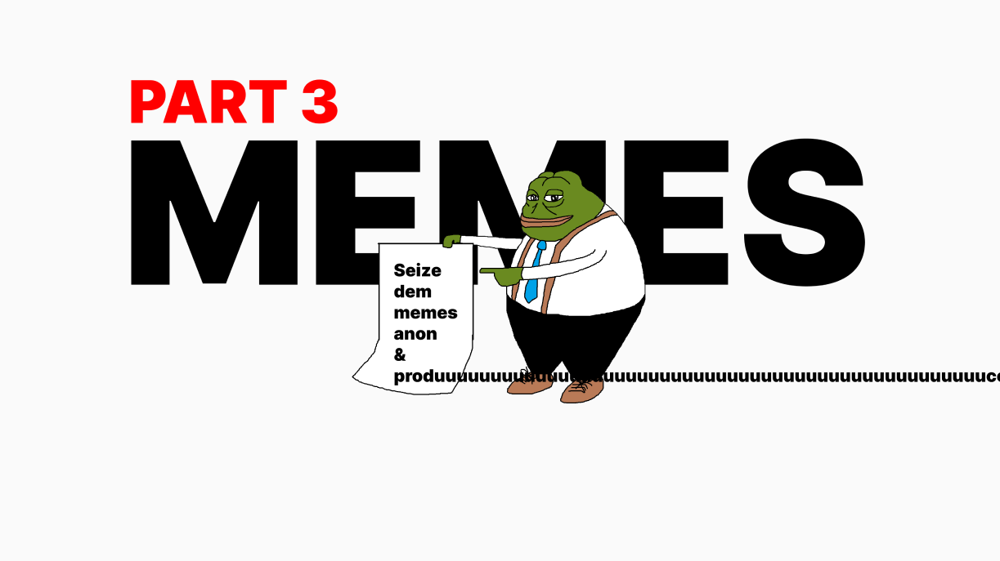
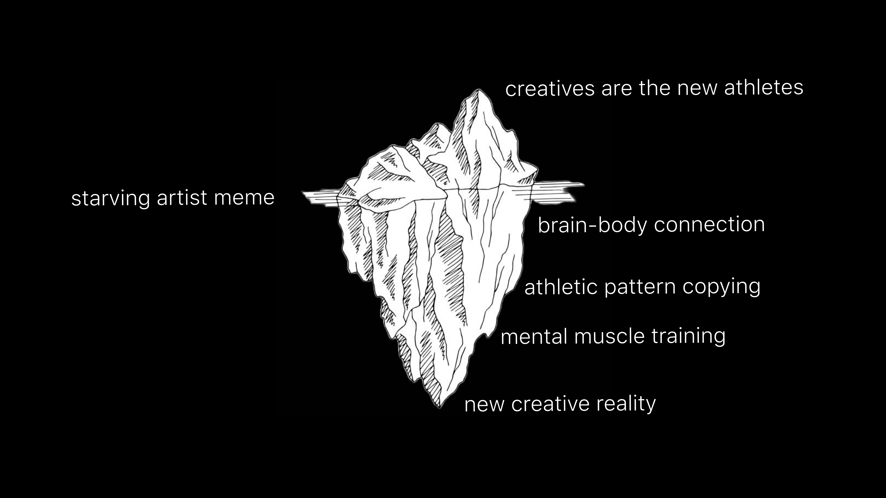
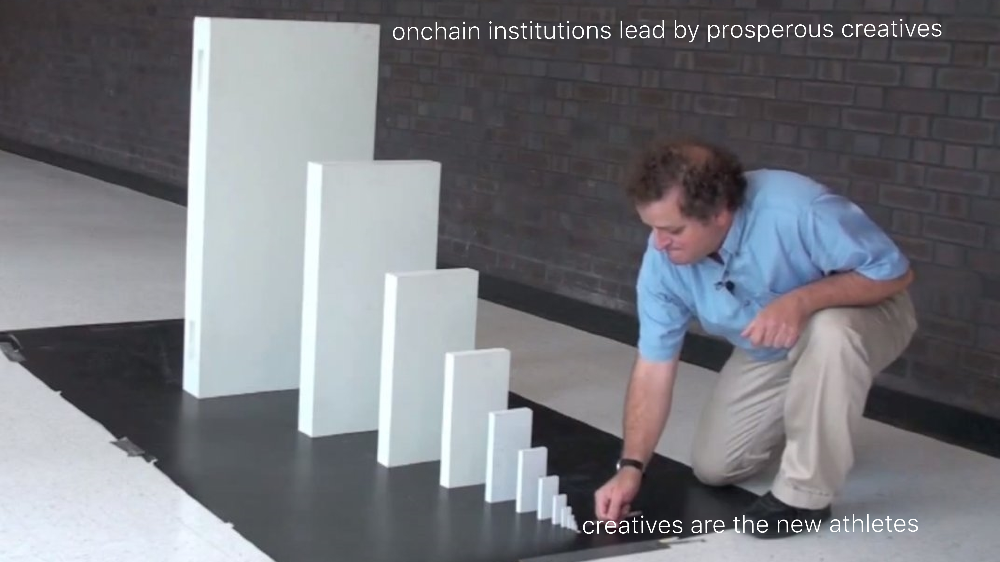

Examining the production layer of a specific meme
Pick up where we left off:
A Non-Technical & Highly Speculative Look at Memes: Part 1
A Non-Technical & Highly Speculative Look at Memes: Part 2
Up until this point we have covered the origin of the term meme. We have also dissected the current definitions of the term (noun & verb) and the multi-faceted nature of their use in an environment like social media.
Now we move onto the ‘level 300’ course work. Our greater understandings of the power within this concept can only come from unpacking one up close.
Creatives are the New Athletes
Though unconventional relative to image-comedy memes, “creatives are the new athletes” is a meme.
The Ice Berg characteristic
As I’ve previously stated, memes main function of interest to us is their ability to package data, transfer it, and have it properly digested by other minds. The graphic above illustrates how a five word phrase can bring about an entire paradigm shift to a receptive one.
The Tip
This is the meme. The tip of the iceberg is what pokes at another mind. It is the container of the data. When done properly, saying “creatives are the new athletes” is what transfers all the subtext of the phrase to another individual.
The Surface
Here is the breakthrough point. Either the meme passes through or it is rejected. Above I have illustrated the ‘wall’ this meme must break through for it to transfer successfully (being a starving artist as the only route to success).
The Shallow End
Assuming we were successful in breaking through, the new mind is able to start downloading the data. In this example, it would be the creative starting to focus on their own brain and body connection.
The Deep End
Now we exist at the point where the meme will mutate for the respective mind it has been transferred to. The deep end of a meme could be limitless for all intents and purposes. A new twist could be discovered at any moment in the new host.
The deep end is where the paradigm shifts occur usually. If we took the example of a creative living under the starving artist model, and then examined them after integrating the creative athletes model, you would see two different humans. You would see two different sets of results as well.
Memes of Production
I have yet to discuss this with @6529, but I feel fairly confident we are in the same ballpark. The “memes of production” could be viewed as the icebergs.
Creatives are the new athletes is a meme of producing more capable and influential creatives into the world. The domino effect of such a meme is near limitless.
Though the specific meme of interest to one is endlessly diverse, so too are the benefits of such diversity. The power of memes are:
- in their understanding
- in their application
To seize the memes of production, is to seize the ability of packaging layered, highly transformative, and often times abstract data/information for another mind to download, and begin producing tangible results in meatspace with.
The internal benefits of such a skill acquirement, are the synthesis of layered, highly transformative, and often times abstract data/information for your own mind to download, and begin producing tangible results with in meatspace.
When you realize that all word-language is a mode of transferring data or information from one brain to another, you realize that memes are an exponentially more diverse, potent, and effective model that also simplifies the data.
Sharing
Thus, somebody could try and sit a woeful creative down and preach to them about a new creative reality that includes mind body connection, athletic pattern copying, blah blah blah. Or that same person could just tell them “creatives are the new athletes.”
Sure, it’s not a 100% hit rate… nothing is. But which would you be more likely to listen to and explore further:
- a moral sermon on how you are wasting potential and all the concepts you need to change in order to meet the demands of the new creative landscape
- or a catchy phrase that hints at a new paradigm